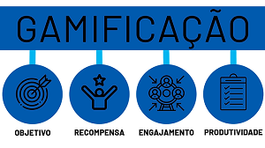

site Rust
Um pouco mais sobre
A gamificação é o uso de elementos e mecânicas de jogos em contextos que não são necessariamente jogos.
Isso inclui aplicar elementos de jogos em treinamentos corporativos, marketing e processos de aprendizagem .
A gamificação pode ser uma ferramenta eficaz para engajar e motivar as pessoas em diversas áreas.
site csgo
Um pouco mais sobre
A tecnologia de realidade virtual e aumentada tem sido amplamente utilizada na indústria de jogos,
mas também tem aplicações em outras áreas. Elas podem ser usadas em treinamentos, simulações, design de produtos,
medicina, turismo, entre outros setores.

site dark
Um pouco mais sobre
A tecnologia tem desempenhado um papel cada vez mais importante na educação.
Existem diversas soluções tecnológicas que auxiliam no ensino e aprendizagem,
como aplicativos educacionais, plataformas de ensino online, recursos interativos e ferramentas de colaboração.
Inteligência Artificial (IA) e jogos:
site lol
Um pouco mais sobre
A inteligência artificial tem sido aplicada em jogos para criar personagens não-jogáveis
(NPCs) com comportamentos realistas, para gerar conteúdo proceduralmente e para melhorar a experiência do jogador.
Além disso, a IA também tem sido utilizada em pesquisas e estudos sobre comportamento humano e tomada de decisões.